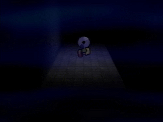
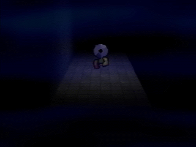

Below are listed the negative discs we know about and every disc's differences from the positive ones.
Disc 0 is a version of the game with only a logo screen and one "room".
There is no music in the game. The only sound are the player character's footsteps (That are also found on the surface game in the positive discs)
There is no pause menu.
The main menu displays a still logo on the pause screen background from the positive discs. Below is text that says "Press Start" and another line of text that says "© Garalina 1996"
After pressing start a room will load. This room seems to be the exact same as the first room from the level "Even Care" from the positive discs.
The room's textures have a chequered pattern with pink an blue colors. This room seems to have been made very early in development to test the engine of the game.
The disc was first found by Colon. It was given to him as a Birthday gift in 1996. The person who gave him the gift is unknown
It was later found by Franky. Then given to the disc searcher. How Franky got a hold of the disc is unknown as Colon threw away the disc before finding about it's purpose.
Disc -1 (Negative one) contains a plus disc with recolored/retuxtered rooms. It also contains several other diffrences.
 

The disc seems to have no catchable creatures (Pets) and the "Pets" button in the title screen has been replaced with "Discs"
What the "Discs menu" contains is unknown at the moment of writing.
There is little information about the journey of the disc itself. It was found by the disc searcher and she is the only one who has it.
Colon speculated that Disc -1 wasn't important in the timeline so almost no research was done on the disc.
We can only currently trust the disc searcher's social media posts.
Disc -2 (Negative two) is a variation of a positive disc. Little is known about this disc as only one person played it and only for a limited time.
The only thing we can say about Disc -2 is that the hidden game grass section found in the positive discs (Also known by "Newmaker Plane") has been made a desert.
The disc was discovered by a person we won't say the name of and it was played for only 15 minutes and 29 seconds.
A screenshot of the disc with the disc searcher playing it was discovered but we have no other evidence that the disc searcher has played Disc -2.
Disc -5 (Negative five) contains private information. The only thing we can say right now is that the disc does not contain a game.
(This is a fanmade website and is not associated with Petscop)